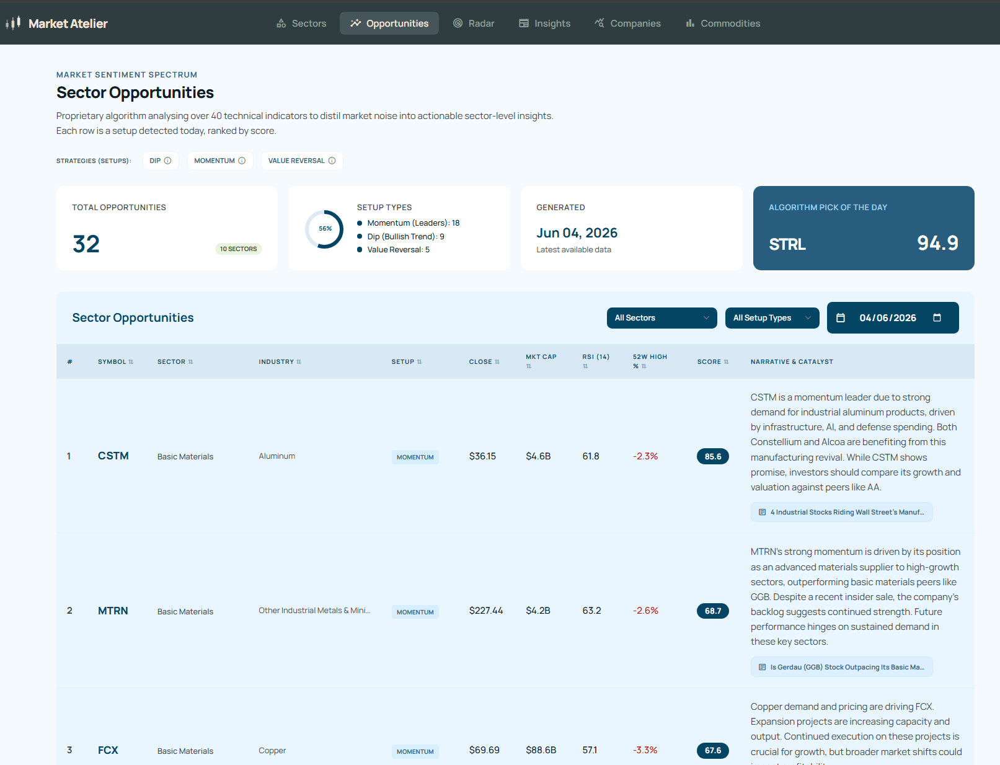
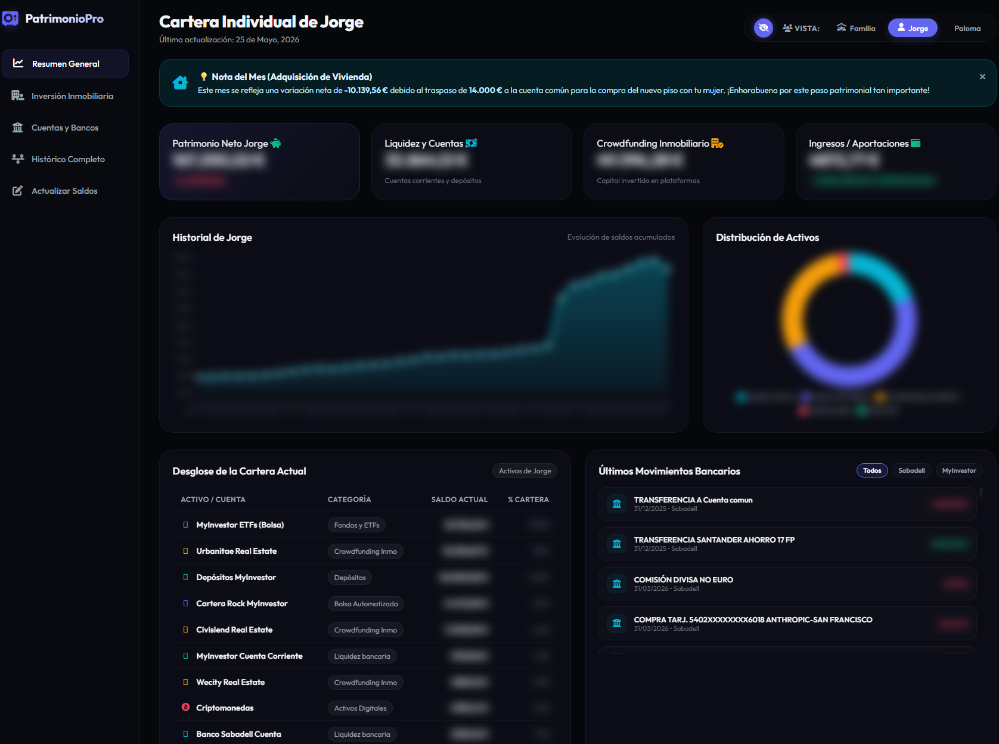

Proyectos
Proyectos Profesionales y Personales
Proyectos Profesionales

KPIs de Operaciones de Red
Power BI / SQL / Python
Administración del portal Sharepoint de Operaciones de Red, que contiene más de 20 dashboards ejecutivos totalmente automatizados en Power BI que monitorizan KPIs principales.

Fotodered
Flask / Javascript / SQL
Sitio web desarrollado con Flask, Datatables, Leaflet y ChartJs para rastrear las Alarmas de Red Fija y Móvil del Área de Red de Vodafone España.
Proyectos Personales

Analizador de Bolsa
Python / BigQuery / Cloud Run
Proyecto personal para analizar y realizar el seguimiento de tendencias bursátiles, importar datos financieros, calcular indicadores técnicos y visualizar métricas clave en un panel personalizado.

Gestor de Finanzas Personales
Python / BigQuery / Cloud Run
Aplicación de gestión de finanzas personales para registrar ingresos y gastos, categorizar transacciones, establecer presupuestos y visualizar estadísticas financieras mensuales con gráficos interactivos.